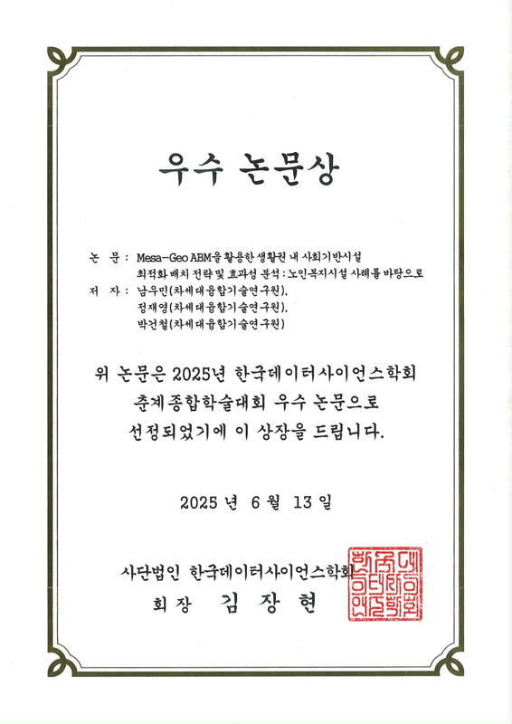
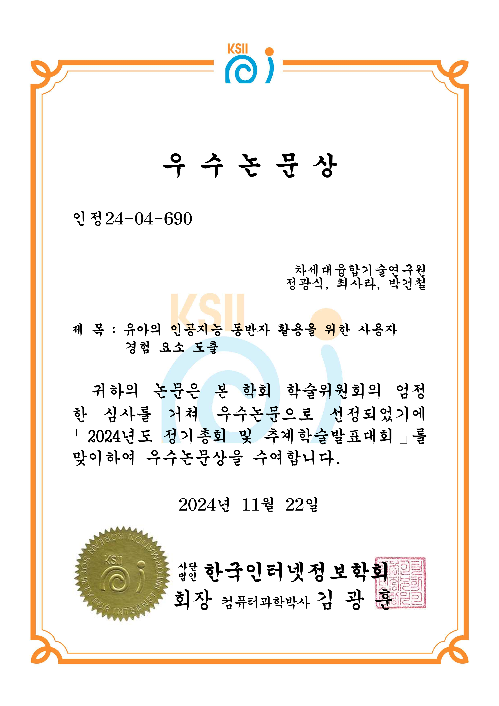
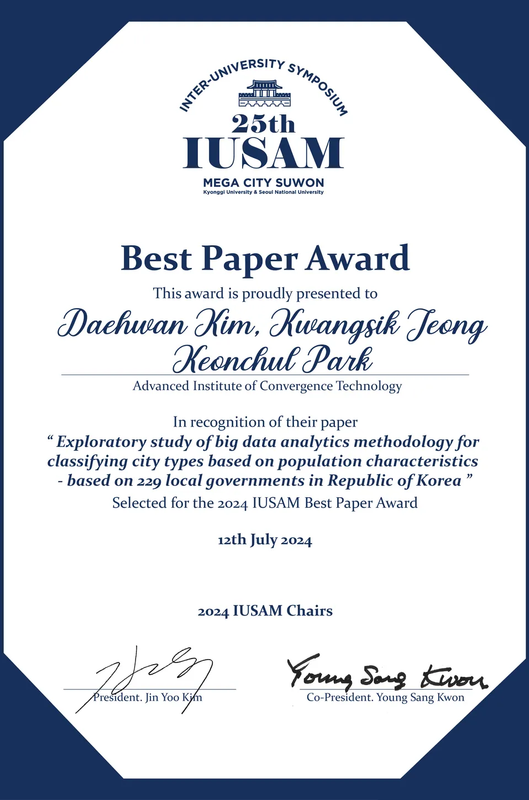
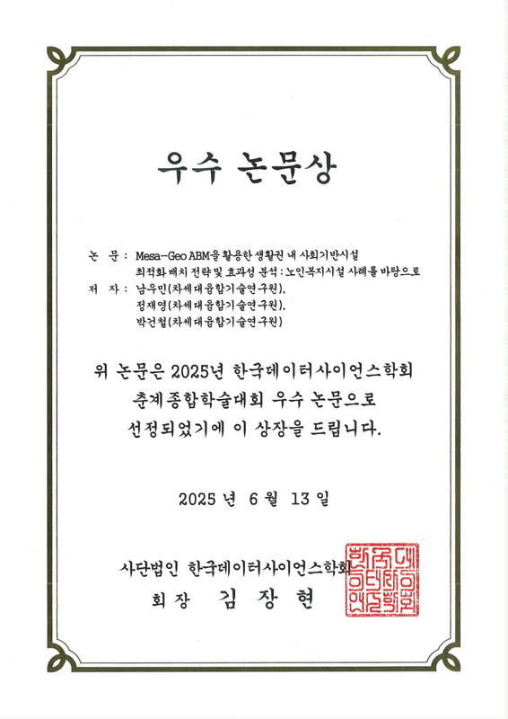
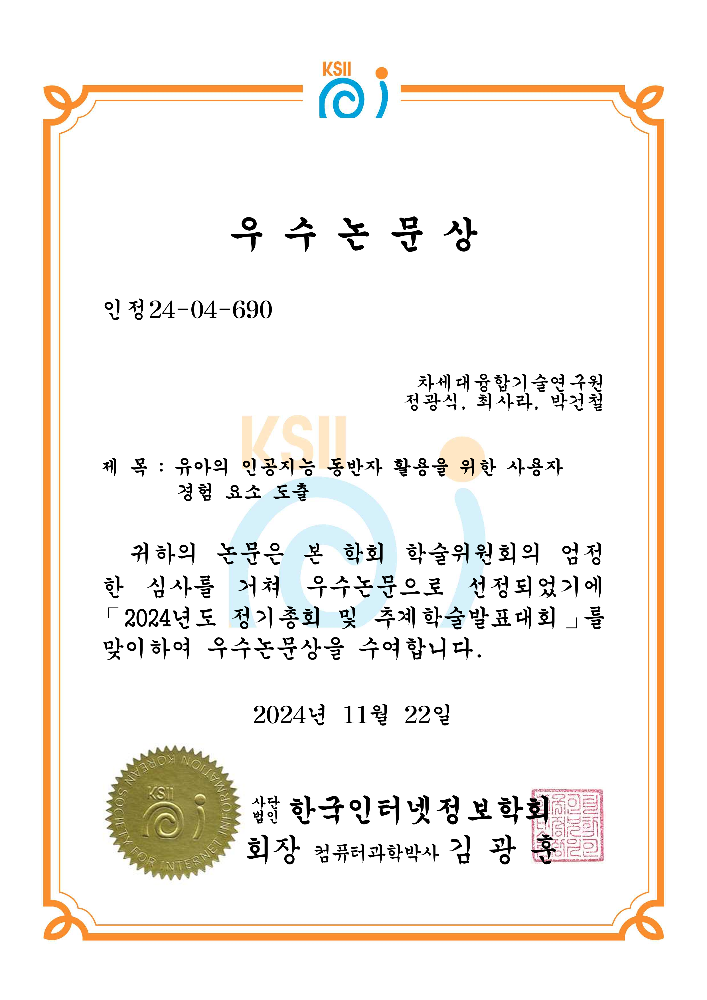
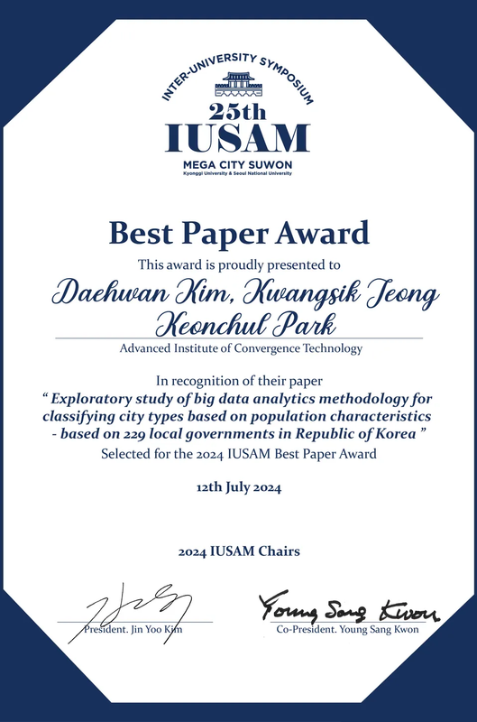
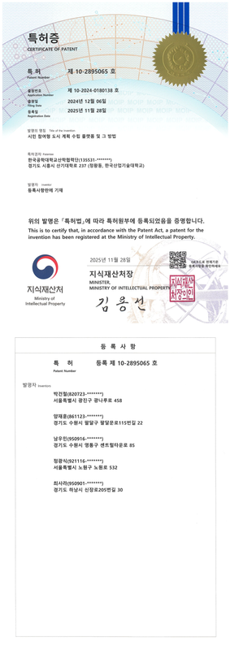
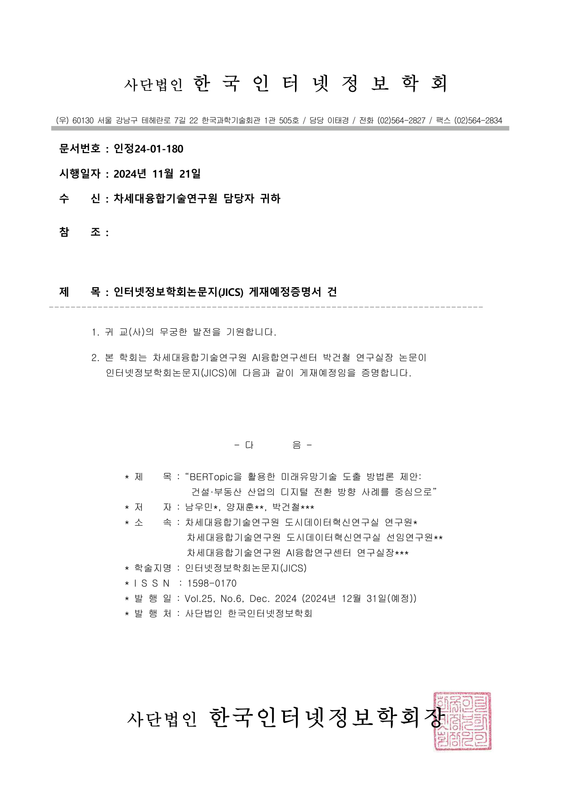

Journal
2025
- 남우민, 김장현 and 박건철. (2025). 데이터 기반 생활권 계획을 통한 노인복지시설 최적 배치와 정책 효과 검증. 디지털콘텐츠학회논문지, 26(11), 3239-3249.
- 정해선, 이해인, 고영민, 김예은, 최사라 and 박건철. (2025). Latent Profiles and Regression-Based Analysis of Socio-Emotional Development: Evidence from Longitudinal Data and Interpretable Machine Learning. 멀티미디어학회논문지, 28(9), 1339-1357.
- Jung, H. S., Lee, H., & Park, K. C. (2025). Analysis of UX Elements in Educational Applications for Young Children and Implementation of ISO/IEC 25010 Quality Standards. Sage Open, 15(3).
- 정광식, 최사라 and 박건철. (2025). 유아의 안전한 대화를 지원하는 AI 동반자 서비스 아키텍처:유해 언어 필터링을 중심으로. 인터넷정보학회논문지, 26(4), 55-68.
2024
- 남우민, 양재훈 and 박건철. (2024). BERTopic을 활용한 미래유망기술 도출 방법론 제안 : 건설·부동산 산업의 디지털 전환 방향 사례를 중심으로. 인터넷정보학회논문지, 25(6), 71-80.
- 김대환, 정광식, 남우민, 권영상 and 박건철. (2024). 인구특성 데이터 기반 대한민국 인구실태 분석: 229개 기초지자체를 대상으로. 한국인구학, 47(3), 117-153.
- 정광식, 양재훈 and 박건철. (2024). 유아 특성을 고려한 AI 윤리 프레임워크와 규제 방향 도출에 관한 연구. 디지털콘텐츠학회논문지, 25(8), 2225-2237.
2023
- 이승하, 김대환, 정광식 and 박건철. (2023). Hourglass 기반 공공도입연계형 국가연구개발사업성과평가 프레임워크 제안: 빅데이터 기반 인공지능 도시계획 기술개발 사업 사례를 바탕으로. 인터넷정보학회논문지, 24(6), 31-39.
- 박지혜, 김대환 and 박건철. (2023). Where and Why? A Novel Approach for Prioritizing Implementation Points of Public CCTVs using Urban Big Data. 인터넷정보학회논문지, 24(5), 97-106.
- 김대환, 남우민 and 박건철. (2023). Application of Urban Computing to Explore Living Environment Characteristics in Seoul : Integration of S-Dot Sensor and Urban Data. 인터넷정보학회논문지, 24(4), 65-76.
- 장수정, 한승희, 박건철. (2023). 유아용 인공지능 동반자의 사회적 특성 연구. 디지털콘텐츠학회논문지, 24(12), 3199-3211.
2022
- Nam, Woo-Min & Park, Keon Chul. (2022). 스마트도시 구현을 위한 시민참여의 역할과 방향에 관한 연구. 인터넷정보학회논문지, 23(6), 79-86.
- Keon Chul Park and Sangmin Lee. (2022). Investigating Consumer Innovativeness for New Media Infusion: Role of Literacy in the Context of OTT Services in Korea. KSII Transactions on Internet and Information Systems, 16(6), 1935-1952.
2025
- 이해인, 정해선, 박건철. (2025). 인공지능 기반 유아 교육 서비스에서의 학습 패턴과 사회정서적 상호작용 분석. 한국인터넷정보학회 춘계학술발표대회.
- 박건철. (2025). 전자정부에서 AI정부로의 전환-AI 시대의 정부 서비스의 혁신과 변화. 경인행정학회 춘계학술대회.
- 남우민, 정재영, 박건철. (2025). Mesa-Geo ABM을 활용한 생활권 내 사회기반시설 최적화 배치 전략 및 효과성 분석: 노인복지시설 사례를 바탕으로. 한국데이터사이언스학회 춘계종합학술대회.
- 고영민, 정해선, 박건철. (2025). 소형 멀티모달 거대 언어 모델의 차트 기반 질의응답을 위한 다중 작업 지식 증류 기법 제안. 한국데이터사이언스학회 춘계종합학술대회.
- 정해선, 이해인, 박건철. (2025). 유아 사회정서 발달 지원을 위한 한국어 유해 언어 데이터셋 구축 및 자동 필터링 프레임워크 제안. 한국데이터사이언스학회 춘계종합학술대회.
- 양재훈, 정재영, 박건철. (2025). AI 신약개발 시대의 개방형 혁신 전략 프레임워크 : 국내 사례 분석을 통한 협력 구조의 유형화 분석. 한국데이터사이언스학회 춘계종합학술대회.
- Choi, S. R., Go, Y. M., & Park, K. C. (2025). Capturing Children's Attention: AI-driven Analysis of Thumbnail Design in YouTube Educational Content. Pacific-Asia Conference on Information Systems (PACIS 2025).
- Moon, J. H., Choi, O. J., Choi, S. R., Park, K. C., Lee, J. R., & Shin, W. S. (2025). CSAF: Child-like Speech Augmentation Framework through Adult Speech Data Modulation. KSII Transactions on Internet and Information Systems (International Conference context).
2024
- 김대환, 정광식, 박건철. (2024). 인구특성 기반 도시 분류 및 진단을 위한 인구구조·인구이동 빅데이터 분석 방법론 설계 연구. 한국인터넷정보학회 춘계학술발표대회.
- 남우민, 양재훈, 박건철. (2024). 특허 네트워크 분석을 활용한 국토교통 기술 연결 지형 구성과 핵심전략 분야 탐색. 한국인터넷정보학회 춘계학술발표대회.
- 박건철, 김대환, 양재훈, 남우민, 정광식. (2024). 인구특성 변화 분석을 통한 도시유형 분류 및 지속가능성 진단. 한반도미래인구연구원 학술대회.
- 김대환, 정광식, 박건철. (2024). 인구특성 데이터 기반 대한민국 인구실태 분석: 229개 기초지자체를 대상으로. 한국인구학회 전기학술대회.
- Kim, D. H., Jeong, K. S., & Park, K. C. (2024). Exploratory study of big data analytics methodology for classifying city types based on population characteristics-based on 229 local governments in Republic of Korea. 25th IUSAM.
- Jeong, K. S., Kwon, Y. S., & Park, K. C. (2024). Impact of Land Uses on Municipal Waste Generation. 25th IUSAM.
- 양재훈, 박건철. (2024). 멀티모달 접근을 통한 유아 발화 감정 인식: 음성 주파수 분석과 텍스트 기반 검증. 한국인터넷정보학회 추계학술대회.
- 정광식, 최사라, 박건철. (2024). 유아의 인공지능 동반자 활용을 위한 사용자 경험 요소 도출. 한국인터넷정보학회 추계학술대회.
- 최사라, 정광식, 박건철. (2024). 유튜브 아동 콘텐츠의 영상 디자인과 대본 구성 요소가 조회수에 미치는 영향. 한국인터넷정보학회 추계학술대회.
- 남우민, 박건철. (2024). 공공분야 인공지능 도입 활성화를 위한 인프라 구축 방안에 관한 탐색적 연구. 국내학술대회.
- Jeong, K. S., Nam, W. M., & Park, K. C. (2024). An Exploratory Analysis for Deriving Linguistic Factors for Children-AI Interaction. KSII The 16th International Conference on Internet (ICONI 2024).
- Yang, J. H., Nam, W. M., & Park, K. C. (2024). Emotion Recognition in Child Speech through Multimodal Data: Considerations for Speech and Text Analysis. KSII The 16th International Conference on Internet (ICONI 2024).
- Choi, S. R., & Park, K. C. (2024). Parental Speech Patterns and Children’s Emotional Responses: A Study Using YouTube Vlog Data. KSII The 16th International Conference on Internet (ICONI 2024).
2023
- 박건철. (2023). 임무중심 R&D를 위한 국가연구개발사업 성과평가지표 연구. 한국정책분석평가학회 춘계학술대회.
- 김대환, 남우민, 박건철. (2023). S-Dot 빅데이터를 통해 확인한 서울시 생활환경별 특징과 그에 영향을 미치는 도시계획 특성. 한국인터넷정보학회 춘계학술대회.
- 남우민, 김대환, 박건철. (2023). 도시적 관점에서 저출산 대응을 위한 지표 탐색연구. 한국인터넷정보학회 춘계학술대회.
- 양재훈, 박건철. (2023). 디지털 전환과 바이오제약산업 혁신사례 연구. 한국인터넷정보학회 춘계학술대회.
- Nam, W. M., Kim, D. H., & Park, K. C. (2023). Rethinking the Locus and Focus of Citizen Participation: Role of UX and UI for Urban planning Application. KSII The 18th Asia Pacific International Conference on Information Science and Technology (APIC-IST 2023).
- 양재훈, 박건철. (2023). 국토교통 데이터 생태계 활성화를 위한 데이터 혁신클러스터 개념 정립. 한국정책분석평가학회 하계학술대회.
- 장수정, 박건철. (2023). 유아를 위한 대화 중심 인공지능 동반자의 사회적 특성 및 기능. 한국인터넷정보학회 추계학술대회.
- 한승희, 박건철. (2023). 개인화된 인공지능 동반자 설계를 위한 개념적 프레임워크 제안. 한국인터넷정보학회 추계학술대회.
- 박건철, 정광식, 김대환, 이승하, 양재훈. (2023). 국토교통 데이터 생태계 활성화를 위한 데이터 혁신 클러스터 개념 정의 및 핵심 기능 도출에 관한 연구. 한국인터넷정보학회 추계학술대회.
- 정광식, 이승하, 김대환, 박건철, 남우민. (2023). 빅데이터 기반 인공지능 도시계획의 성과평가 프레임 및 지표 정의에 관한 연구. 한국인터넷정보학회 추계학술대회.
- Han, S. H., Chang, S. J., & Park, K. C. (2023). AI Companion for Children: A Service Architecture to aid Social-Emotional Development. KSII The 15th International Conference on Internet (ICONI 2023).
2022
- 박건철, 김대환. (2022). 사용자 참여형 빅데이터 기반 건강 위험도 관리 서비스에서의 보안 프레임에 관한 연구. 2022년 한국인터넷정보학회 춘계학술발표대회.
- 박건철, 김관철, 김대환, 양재훈. (2022). 시민참여형 인터렉티브 소통 플랫폼 개발을 위한 핵심성공요인 도출 : 도시계획지원플랫폼의 UX/UI를 중심으로. 2022 한국산학기술학회 춘계학술대회.
- 박건철, 김대환, 남우민. (2022). 공공분야 인공지능기반 도시계획 플랫폼의 성과평가 방법 및 평가지표에 관한 탐색연구. 2022 한국인터넷정보학회 추계학술대회.
- 김대환, 남우민, 박건철. (2022). 서울시 S-Dot 빅데이터를 이용한 생활환경 특성 도출에 대한 방법론 탐색연구. 2022 한국인터넷정보학회 추계학술대회.
- 김대환, 남우민, 박건철. (2022). 특허 네트워크분석을 통한 스마트시티 기술동향 분석 및 전략기술 예측에 관한 연구. 2022 한국인터넷정보학회 추계학술대회.
- Park, K. C. (2022). A Study on the Performance Evaluation Framework for AI-Driven Systems in the Public Sector. KSII The 14th International Conference on Internet (ICONI 2022).
- Kim, D. W., Kim, K. C., & Park, K. C. (2022). Analysis of Urban Planning Online Platform based on the Citizen Participation Stage. KSII The 14th International Conference on Internet (ICONI 2022).
- Nam, W. M., & Park, K. C. (2022). A Study on the Improvement of Patent Evaluation in National R&D Performance Evaluation. KSII The 14th International Conference on Internet (ICONI 2022).
- Yang, J. H. (2022). Evaluating Mission-Oriented R&D Programs: focused on Smart City Projects. KSII The 14th International Conference on Internet (ICONI 2022).
 








